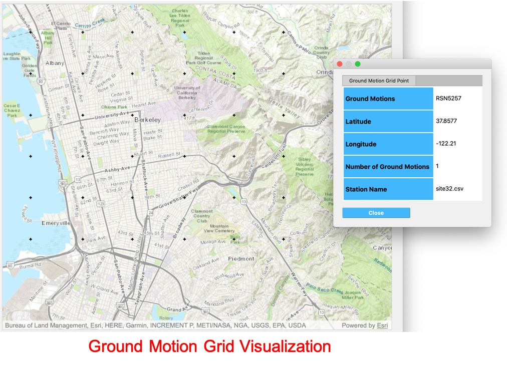

2.3. HAZ: Hazards¶
In this panel the user can define hazards over a region. The user can select the type of hazard, Earthquakes, Wind, etc., from the Hazard Selection combo box, as shown on the top of Fig. 2.3.1. As the user selects between different hazards, the main panel changes to reflect the inputs for each type of hazard application.
Fig. 2.3.1 Earthquake scenario simulation input panel.¶
2.3.1. Earthquake Scenario Simulation¶
The Earthquake Scenario Simulation is an application that selects earthquake ground motion records at one or more user defined locations. The application employs OpenSHA, determining which records to select from the a ground motion database. The Earthquake Scenario Simulation input panel is given in Fig. 2.3.1. The individual input panes are discussed below.
Site Definition Parameters
This is where a user defines the geographical locations where ground motion selection will occur. A user can define a single location, or multiple locations on a grid, as seen in the top-left corner of Fig. 2.3.1.1.
Single Location
In the Single Location site pane, shown in Fig. 2.3.1.1, the user needs to provide the following input parameters:
Number of Ground Motions per Site: The number of ground motions that will be selected at the site.
Location: The latitude and longitude of the site.
Fig. 2.3.1.1 Single location site definition.¶
Grid of Locations
In the Grid of Locations input pane, given in Fig. 2.3.1.2, the user can either manually define a grid, or select a grid on a map. To manually define a grid, the user needs to provide the following input parameters:
Latitude Extents: The minimum and maximum latitude values that the grid will span.
Longitude Extents: The minimum and maximum longitude valuesthat the grid will span.
In addition to defining the geographical extents of the grid, the user must also provide the following parameters:
Number of Ground Motions per Site: The number of ground motions that will be selected for each site.
Latitude Discretization: The number of divisions along the latitude direction.
Longitude Discretization: The number of divisions along the longitude direction.
Fig. 2.3.1.2 Location grid site definition pane.¶
To select a grid on a map, the user can click on the Define Grid on Map button and a new Grid Selection Window will appear with the grid, as seen in Fig. 2.3.1.3. A user can click and drag the Resize and Move handles, shown in Fig. 2.3.1.3, to resize the grid extents and to move the grid. Changing the grid discretization along the latitude and longitude directions will change the number of grid divisions on the map. Once a grid is defined on the map, the window can be closed and the grid information will be updated in the input pane. To view or modify the grid again, press the Define Grid on Map button and the Grid Selection Window displaying the grid will reappear.
Fig. 2.3.1.3 Selection of grid on map.¶
Spatial Correlation and Ground Motion Scaling Factors
This is where the user selects the spatial correlation models, and where the user defines the minimum and maximum scaling factors that are used in ground motion selection. Shown at the top of Fig. 2.3.1.4, the user has the option to select the Intra- and Inter-event Spatial Correlation Models. Spatial correlation ensures that ground motions at different locations will share similar characteristics. The following Inter-event Spatial Correlation Models are available:
Baker & Jayaram (2008)
and the following Intra-event Spatial Correlation Models are available:
Markhvida et al. (2017)
Jayaram & Baker (2009)
Loth & Baker (2013)
The Ground Motion Record Scaling Bounds, shown at the bottom of Fig. 2.3.1.4, are the minimum and maximum scaling factors that intensity measures can be scaled by during the gound motion selection process.
Fig. 2.3.1.4 Spatial correlation and ground motion selection scaling factors.¶
Ground Motion Record Database
Ground motion records are selected from a ground motion database. Currently, only the PEER NGA-West2 database is available, shown in the Ground Motion Record Database combo box in Fig. 2.3.1.
Ground Motion Prediction Equations
The Ground Motion Prediction Equation box in Fig. 2.3.1 provides a combo box where one of the following ground motion prediction equations can be selected:
Abrahamson, Silva & Kamai (2014)
Boore, Stewart, Seyhan & Atkinson (2014)
Campbell & Bozorgnia (2014)
Chiou & Youngs (2014)
Ground motion prediction equations estimate the intensity of ground shaking that may occur at a given location.
Earthquake Rupture Definition
This is where the user defines the earthquake rupture characteristics. Point source and earthquake rupture forecast models are availble.
Earthquake Rupture Forecast
The Earthquake Rupture Forecast allows users to select historical earthquakes as the scenarios to run. Historical earthquake data is available from the following supported Earthquake Forecast Models:
WGCEP (2007) UCERF2 - Single Branch
Mean UCERF3
Mean UCERF3 FM3.1
Mean UCERF3 FM3.2
The Earthquake Rupture Forecast pane, shown in Fig. 2.3.1.5, requires the following input parameters:
Rupture Type: Type of earthquake rupture (here Earthquake Rupture Forecast).
Magnitude and Distance: Magnitude of the earthquake and the maximum distance, in km, from a site.
Name: Users can specify keywords here to search for specific earthquakes.
Earthquake Forecast Model: Type of earthquake forecast model.

Fig. 2.3.1.5 Earthquake rupture forecast.¶
Point Source
The Point Source pane, shown in Fig. 2.3.1.6, requires the following input parameters:
Rupture Type: Type of earthquake rupture.
Magnitude: Magnitude of the earthquake.
Location and Depth: Location and depth of earthquake rupture.
Rupture Geometry: Average dip and rake of rupture.

Fig. 2.3.1.6 Point source earthquake rupture.¶
Intensity Measure and Period Points
The Intensity Measure and Period Points pane, shown in Fig. 2.3.1.7, requires the following:
Intensity Measure Type: Type of intensity measure. The Spectral Acceleration (SA) and Peak Ground Acceleration (PGA) intenisty measures are available.
Period Points: List of periods, in seconds. The period points are used in searching and ground motion scaling.

Fig. 2.3.1.7 Intensity measure and period.¶
Settings and Run Buttons
Shown at the bottom of Fig. 2.3.1, the Settings and Run buttons bring up the settings pane and start the ground motion selection application, respectively. The settings pane is provided in Fig. 2.3.1.8, showing the user-selectable directories containing the input and output files of the ground motion selection.
Fig. 2.3.1.8 Earthquake Scenario Simulation settings.¶
The ground motion selection application is run via a Python script. When the Run button is pressed, a console window will appear, given in Fig. 2.3.1.9, showing text output from the script.
Fig. 2.3.1.9 Earthquake selection output console.¶
Upon successful completion of the ground motion selection, the user will see output similar to that shown in the left-hand side of Fig. 2.3.1.10. The results from the simulation are in the Output Directory folder that is specified in the settings, shown in Fig. 2.3.1.8. The final output is a .csv file called
EventGrid.csv. TheEventGrid.csvfile contains the grid points and their locations and file names. Each grid point is assigned a .csv file containing a list of the ground motions at the grid point and their scaling factors. The corresponding ground motion records, in JSON format, are also in the Output Directory directoy. Next, theEventGrid.csvis post-processed, and a new layer, called EQ Hazard Simulation Grid, is added to the VIZ: Visualization Widget. Shown on the right-hand side of Fig. 2.3.1.10, the grid points are represented with a cross symbol. Clicking on a grid point will produce a popup with information about the ground motions at that point.Fig. 2.3.1.10 Post-processing output and grid visualization.¶
2.3.2. User-defined Earthquakes¶
The User-defined Earthquakes application loads the results of an Earthquake Scenario Simulation that has been run previously. The User-defined Earthquakes application input pane is given in Fig. 2.3.2.1. As seen in the figure, the user is required to input the file path to the EventGrid.csv file. If the gournd motions are not in the same folder as the EventGrid.csv file, then the user needs to input the directory path to the folder containing the ground motions.
Fig. 2.3.2.1 User-defined earthquakes input panel.¶